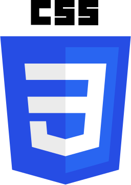
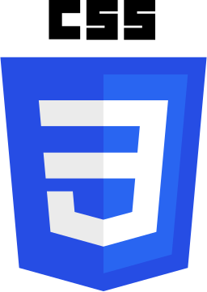
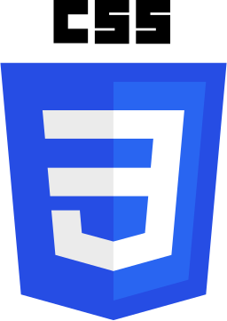
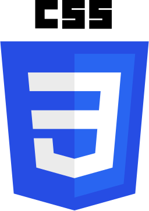

Habilidades
Web y Front End 

Diseño

Frameworks y Librerias
Bases de datos
Lenguajes

Hola,Soy
Acerda de Mi
Soy un joven de 20 años de edad, nací el 21 de Enero de 1995 en Bogota, Colombia en donde actualmente vivo,soy estudiante de la Corporación Universitaria Minuto de Dios de Ingeniería de sistemas. Me considero una persona apasionada por lo que hace,y se esfuerza para que todo le salga muy bien,también considero que tengo talento para ello. Se trabajar en grupo o individual,en grupo me considero un líder por mi formación siempre estoy atento a todo,ayudando,apoyando,preguntando y mas que todo escuchando nuevas ideas que ayuden al grupo. Cuando 14 años comencé hacer vídeos para subirlo a youtube sobre cosas de interés (Informático) desde entonces me apasiona a la tecnología, El Desarrollo Web llego a mí por el medio de ser tutor y quería tener mas conocimientos para poder compartir,hay fue cuando comencé a meterme en el rollo del desarrollo web,investigue sobre como crear mi primera pagina web,poco a poco fui adquiriendo conocimientos y conociendo gente. Después entre a un grupo de tutores de diferente disciplinas,conocí a un amigo y creamos ProgAndArt no tuvimos muchos éxitos pero adquirimos experiencia. Desde entonces siempre he querido tener mi empresa pero por ahora solo pienso en adquirir experiencia y mas conocimientos en este medio.
Web Developer, Programacion Web, Nuevas tecnologías, Emprendimientos, Innovación,Desarrollo web.
Español- Competencia nativa
Inglés - Competencia Basica
21 de enero de 1995
Soltero
Lo que la mente del hombre puede concebir y creer, es lo que la mente del hombre puede lograr.
Napoleón Hill
All our dreams can come true,if we have the courage to pursue them.
Walt Disney
Cada niño es un artista. El problema es cómo seguir siendo artista una vez que crezca.
Pablo Picasso
Para tener éxito, su deseo de éxito debe ser mayor que su miedo al fracaso.
Bill Cosby
No importa lo lento que vayas, siempre y cuando no te detengas.
Confucio
Perfil
Tecnólogo en informática con gran potencial laboral, responsable, comprometido, ordenado y ágil. Con actitud para participar en todos los procesos y políticas de la empresa. Soy una persona dedicada, con excelentes relaciones interpersonales con disposición para el trabajo en equipo e individualmente orientado a un excelente logro de resultados. Se me facilita el servicio al cliente para así presentarme como un ser humano integral, Consiente y consecuente de las obligaciones adquiridas.
Desarrollador Freelance, con formación en desarrollo de software y a la construcción de sistemas de información, conocimientos en desarrollo de aplicativos web y base de datos. Manejo de lenguajes de programación de escritorio como Java y C#. Desarrollo web Html5, Css3, Jsp, JavaScript & jQuery y frameworks Bootstrap. Base de datos MySQ y SqlServer y plataforma CMS como Wordpress y Joomla. Me especializo más en el desarrollo web en frontend, diseño gráfico de interfaces y ux, trabajo en equipo con nuevas tecnologías como Github.
Mantener un compromiso profesional y honesto con la organización, que me permita un desarrollo y crecimiento integral, basado en los principios éticos y morales, que nos lleve a construir un ambiente donde trabajemos fijándonos metas, orientando las habilidades personales y grupales al cambio, generando procesos dinámicos que nos permitan obtener mejores resultados
Habilidades
Estudios
Estudiante, Bachiller
en Colegio Villemar del Carmen
Bogota, Colombia
2011
Titulo, Tecnologo en informatica
en Corporación Universitaria Minuto de Dios
Bogota, Colombia
2015-6
Estudiante, Ingeneria de Sistemas
en Corporación Universitaria Minuto de Dios
Bogota, Colombia
2015-6 - Actualidad
Scrum Fundamentals Certified (SFC)
76775 en SCRUMstudy
Bogota, Colombia
2015-Mayo
Scrum Master Certified (SMC)
77880 en SCRUMstudy
Bogota, Colombia
2015-Junio
Curso de Diseño web online
platzi.com
Bogota, Colombia
2015-Julio
Curso de Programación Básica
platzi.com
Bogota, Colombia
2015-Junio
Portafolio